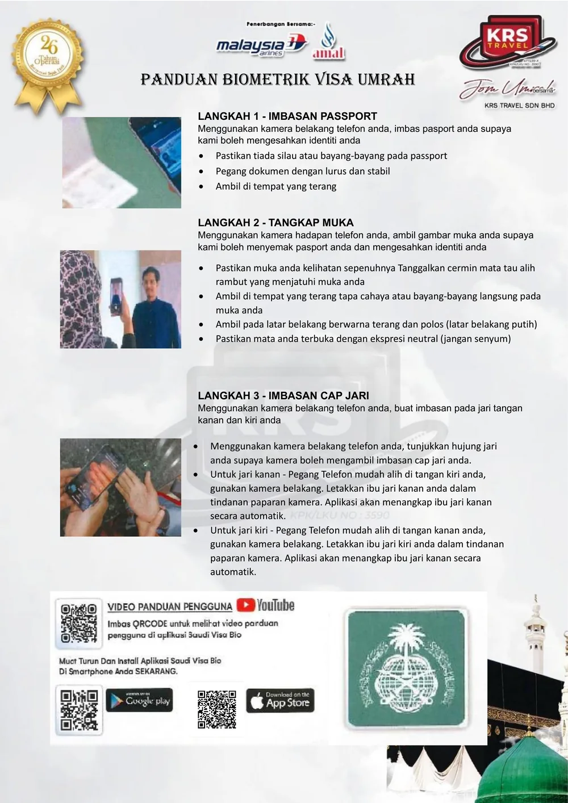
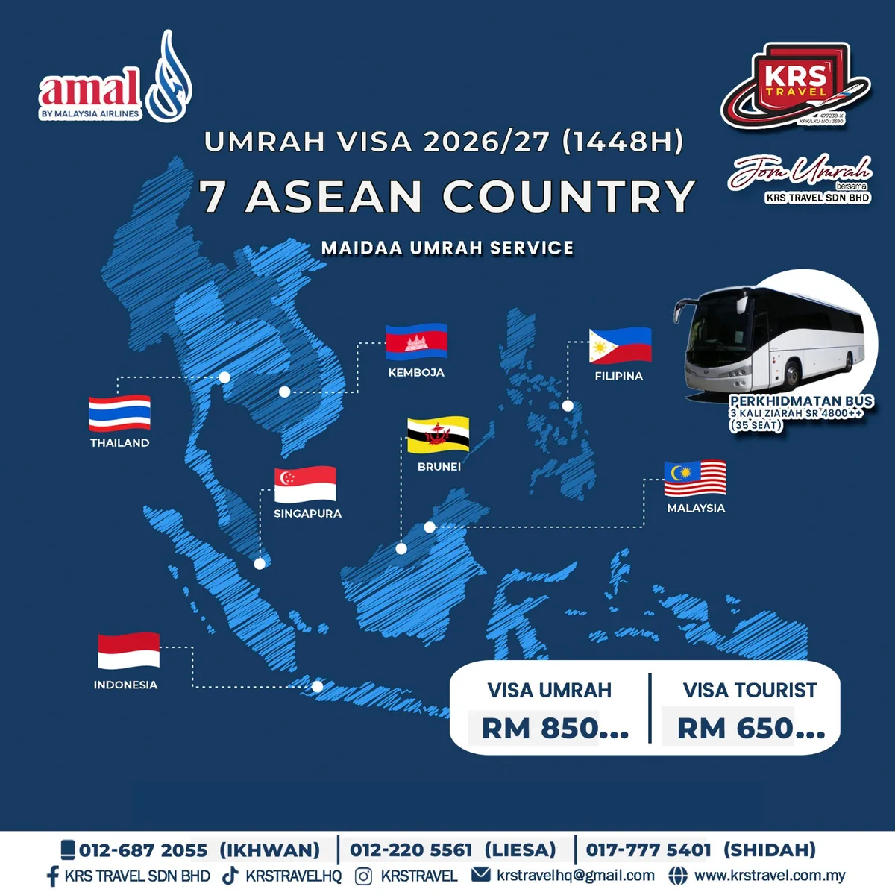

Poster panduan biometrik
Panduan penuh tiga langkah pendaftaran biometrik Saudi Visa Bio dalam satu muka surat — sesuai dicetak atau dikongsi kepada jemaah rombongan. Tekan gambar untuk paparan saiz penuh.
Visa umrah, pelancongan dan perniagaan untuk individu dan rombongan — dokumen disemak, permohonan diuruskan dan status dimaklumkan kepada anda.
Visa
Pengurusan Permohonan Visa
Visa umrah, pelancongan dan perniagaan untuk individu dan rombongan — dokumen disemak dan status dimaklumkan.

Panduan penuh tiga langkah pendaftaran biometrik Saudi Visa Bio dalam satu muka surat — sesuai dicetak atau dikongsi kepada jemaah rombongan. Tekan gambar untuk paparan saiz penuh.

Kami menguruskan permohonan visa umrah dan visa pelancongan bagi warganegara Malaysia, Singapura, Indonesia, Brunei, Thailand, Kemboja dan Filipina — termasuk jemaah bukan warganegara yang bermastautin di Malaysia. SAHKAN: harga RM850 / RM650 dan syarat perkhidmatan bas ziarah
Pendaftaran biometrik wajib dilakukan sendiri oleh setiap jemaah melalui aplikasi Saudi Visa Bio sebelum permohonan visa dihantar. Ikut tiga langkah di bawah — petugas kami membantu jika ada masalah.
Langkah 1
Menggunakan kamera belakang telefon anda, imbas pasport anda supaya kami boleh mengesahkan identiti anda.
Langkah 2
Menggunakan kamera hadapan telefon anda, ambil gambar muka anda supaya kami boleh menyemak pasport anda dan mengesahkan identiti anda.
Langkah 3
Menggunakan kamera belakang telefon anda, buat imbasan pada jari tangan kanan dan kiri anda.
Muat turun dan install aplikasi Saudi Visa Bio di smartphone anda SEKARANG. Pasang aplikasi rasmi Kementerian Luar Negeri Arab Saudi sebelum menyerahkan dokumen, supaya pendaftaran biometrik dapat disiapkan lebih awal. Imbas kod QR di bawah dengan kamera telefon anda, atau tekan butang muat turun.
App Store
Saudi Visa Bio
Imbas dengan kamera iPhone
Memerlukan iOS 13.0 ke atas. Buka aplikasi Kamera, halakan pada kod QR dan tekan pautan yang muncul.
Muat turun dariApp StoreGoogle Play
Saudi Visa Bio
Imbas dengan kamera Android
Memerlukan Android 6.0 ke atas. Buka aplikasi Kamera atau Google Lens, halakan pada kod QR dan tekan pautan yang muncul.
Dapatkan diGoogle PlayImbas QR code untuk melihat video panduan pengguna aplikasi Saudi Visa Bio. ISI: pautan video panduan (YouTube) & kod QR Ada masalah semasa pendaftaran biometrik? Hubungi petugas kami — kami boleh memandu anda langkah demi langkah melalui WhatsApp.
Minta bantuan biometrikDiuruskan untuk semua jemaah pakej umrah KRS Travel. Visa umrah biasanya sah untuk tempoh 30 hari bermula dari tarikh masuk ke Arab Saudi.
Permohonan visa pelancong bagi destinasi terpilih untuk individu, keluarga dan rombongan. ISI: senarai negara yang diuruskan
Permohonan visa perniagaan dan lawatan kerja untuk syarikat, termasuk surat sokongan dan dokumen sokongan. SAHKAN: skop perkhidmatan
01
Hantar salinan pasport, gambar dan dokumen sokongan kepada petugas kami.
02
Kami semak kelengkapan dan maklumkan jika ada dokumen yang perlu diperbaiki.
03
Pendaftaran biometrik melalui Saudi Visa Bio dan permohonan dihantar.
04
Visa dimaklumkan kepada anda sebelum tarikh berlepas. ISI: tempoh proses biasa
Semak tarikh, ketersediaan tempat dan sebut harga rombongan — atau tanya apa sahaja tentang umrah, haji, tiket penerbangan dan visa. Pasukan Seremban kami menjawab setiap hari bekerja, 9 pagi – 6 petang.
Rakan Strategik & Pengiktirafan